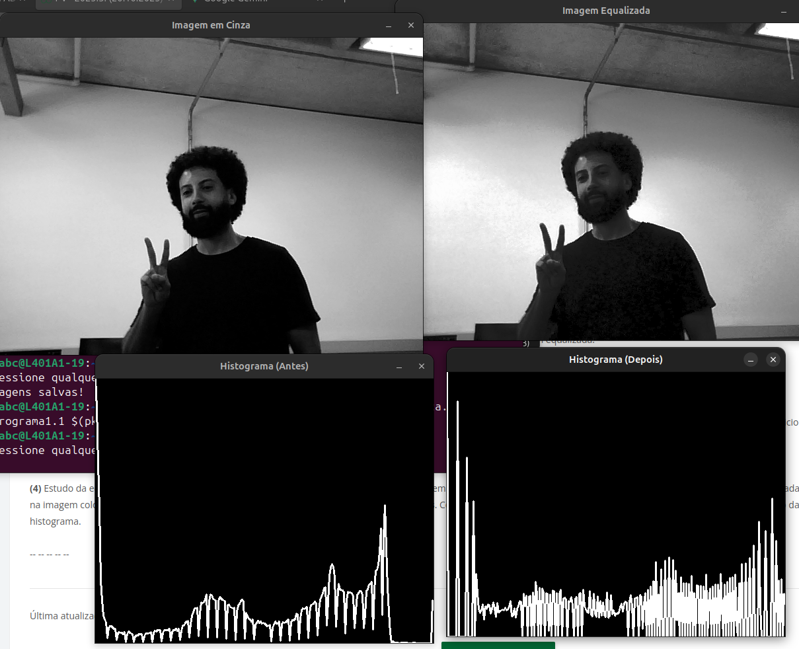
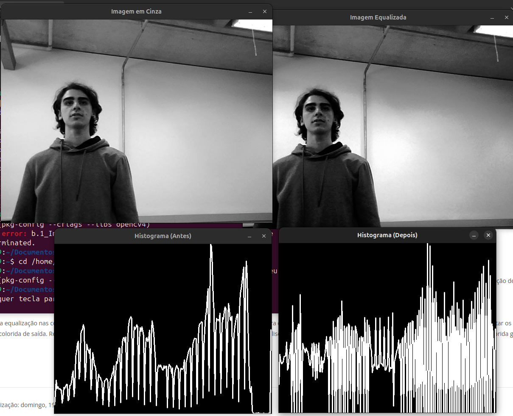
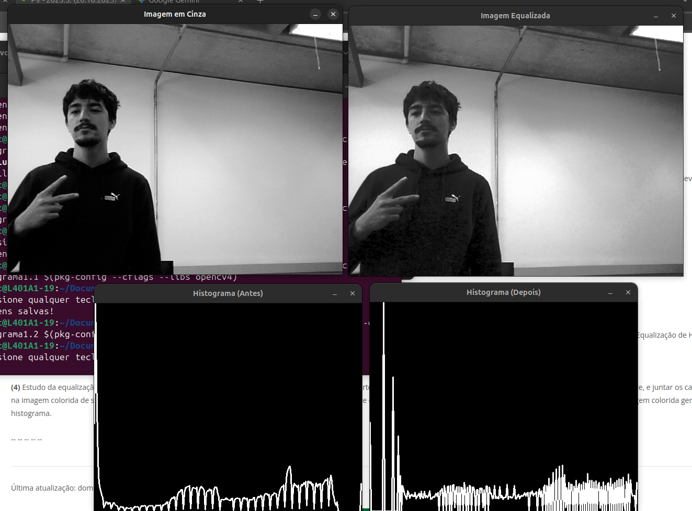
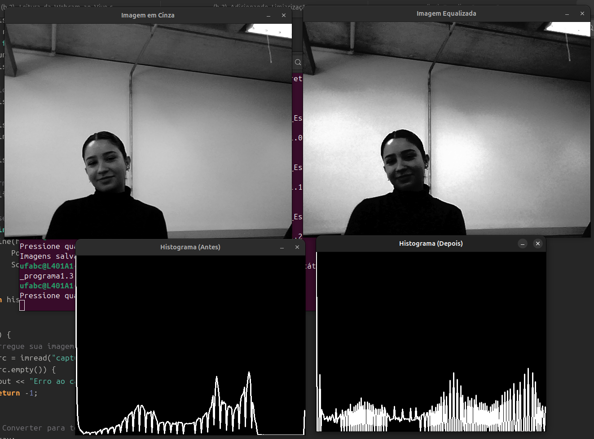
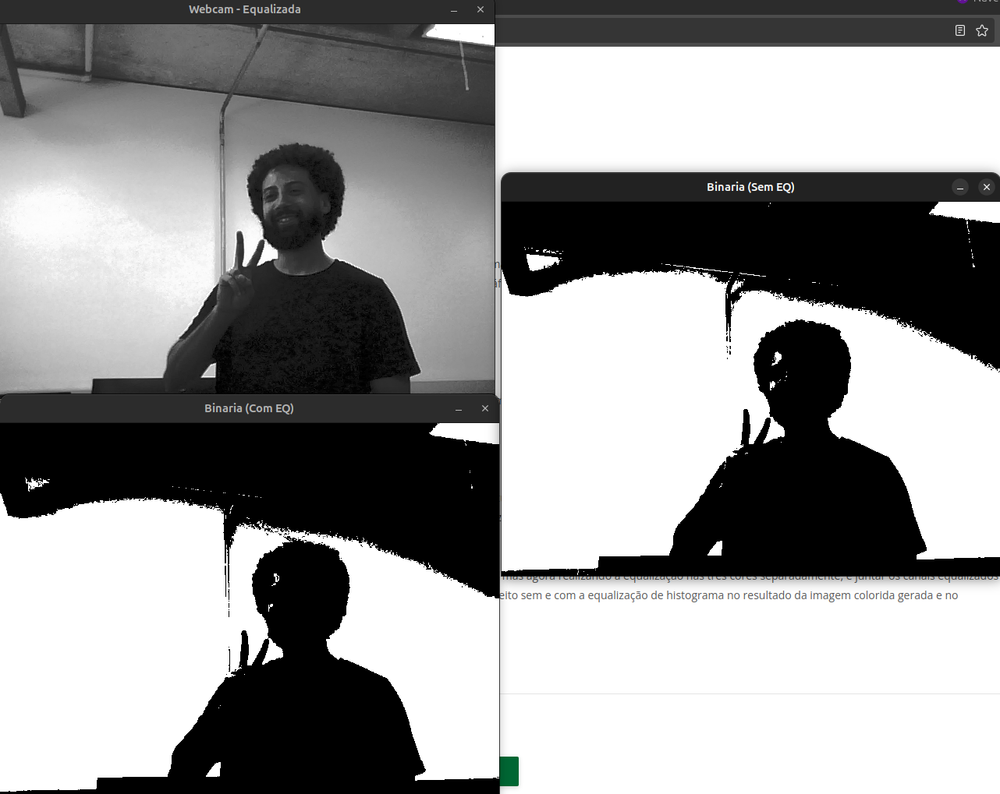
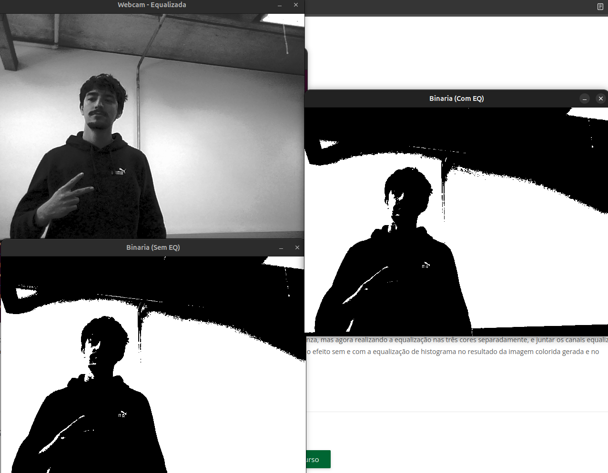
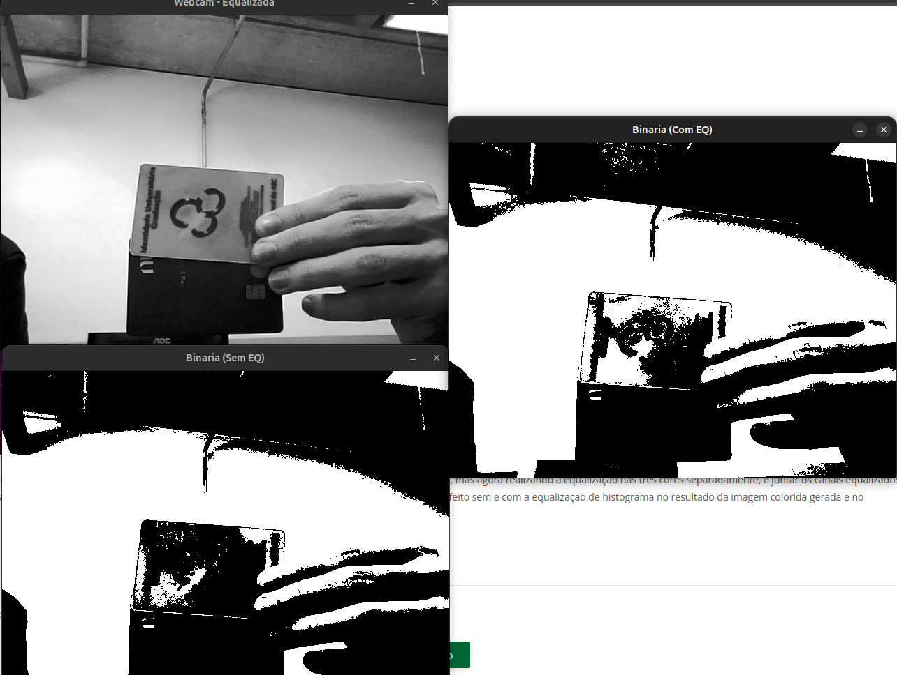
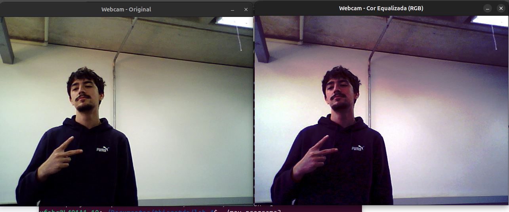
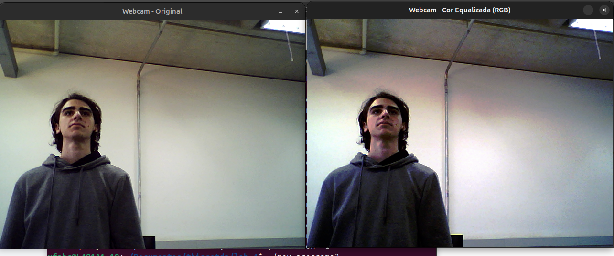
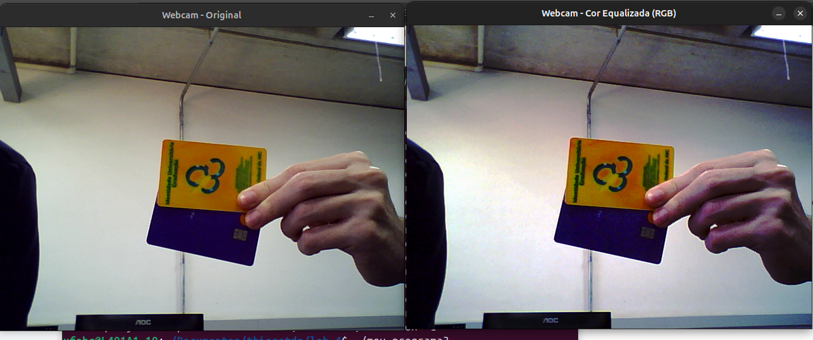

1. Introdução
Este relatório detalha os experimentos realizados na aula de laboratório com foco em técnicas de realce de contraste em processamento de imagens. O objetivo principal foi estudar, implementar e analisar o método de Equalização de Histograma, uma técnica fundamental para melhorar a visibilidade de detalhes em imagens com baixo contraste.
Os experimentos foram conduzidos utilizando a biblioteca de visão computacional OpenCV em C++, abordando desde a aplicação em imagens estáticas até o processamento em tempo real de vídeo (webcam), binarização e aplicação em imagens coloridas.
2. Fundamentos Básicos
O processamento de imagens digitais envolve algoritmos que manipulam pixels para extrair informações ou melhorar a qualidade visual. Os conceitos-chave deste laboratório são:
- Histograma de Imagem: Uma representação gráfica da distribuição das intensidades (níveis de cinza ou cores) dos pixels em uma imagem. Ele quantifica a frequência de cada nível de intensidade.
- Equalização de Histograma: Uma técnica de ajuste de contraste que visa redistribuir as intensidades dos pixels de forma a obter um histograma o mais uniforme possível (plano). Isso "espalha" os valores de pixels mais frequentes, resultando em um aumento do contraste global e na revelação de detalhes em regiões subexpostas ou superexpostas.
- Limiarização (Binarização): Um processo que converte uma imagem em tons de cinza para uma imagem binária (preto e branco). Um valor de limiar é definido; pixels com intensidade acima do limiar tornam-se brancos (255) e pixels abaixo tornam-se pretos (0).
- OpenCV (Open Source Computer Vision Library): Uma biblioteca de código aberto com vasta funcionalidade para visão computacional e processamento de imagem em tempo real, utilizada como ferramenta principal neste trabalho.
3. Materiais e Métodos
Ambiente dos Experimentos
Os experimentos foram desenvolvidos no seguinte ambiente:
- Sistema Operacional: Ubuntu 22.04
- IDE: Visual Studio Code
- Biblioteca: OpenCV (Versão 4.x)
- Linguagem: C++
Procedimentos Experimentais e Diagramas de Blocos
Os quatro roteiros de experimentos foram implementados da seguinte forma:
3.1. Experimento 1: Equalização em Imagem Estática
Implementado pelo script b.1_Imagem_Estática.cpp.
- Fluxo:
- Ler imagem estática (Ex: `george.png`).
- Converter para tons de cinza.
- Calcular histograma da imagem em cinza.
- Aplicar equalização de histograma (
cv::equalizeHist). - Calcular histograma da imagem equalizada.
- Exibir e salvar resultados (imagem cinza, imagem equalizada, histograma antes, histograma depois).
3.2. Experimento 2: Equalização em Tempo Real (Webcam)
Implementado pelo script b.2_Leitura_da_Webcam_ao_Vivo.cpp.
- Fluxo (em loop):
- Capturar quadro (frame) da webcam.
- Converter quadro para tons de cinza.
- Aplicar equalização de histograma ao quadro em cinza.
- Exibir o quadro em cinza e o quadro equalizado lado a lado.
3.3. Experimento 3: Estudo da Binarização (com/sem EQ)
Implementado pelo script b.3_Adicionando_Limiarização.cpp.
- Fluxo (em loop):
- Capturar quadro da webcam.
- Converter para tons de cinza.
- Aplicar equalização de histograma (gerando Imagem EQ).
- Aplicar limiarização (
cv::threshold) na Imagem em Cinza (Binária Sem EQ). - Aplicar limiarização (
cv::threshold) na Imagem EQ (Binária Com EQ). - Exibir resultados para comparação.
3.4. Experimento 4: Estudo da Equalização em Cores
Implementado pelo script b.4_Equalização_nas_Cores.cpp.
- Fluxo (em loop):
- Capturar quadro colorido da webcam.
- Dividir a imagem nos 3 canais de cor (B, G, R) usando
cv::split. - Aplicar
cv::equalizeHistseparadamente em cada canal (B_eq, G_eq, R_eq). - Mesclar os canais equalizados (B_eq, G_eq, R_eq) de volta em uma imagem colorida usando
cv::merge. - Exibir imagem colorida original e imagem colorida equalizada.
4. Resultados e Análises
4.1. Resultados do Experimento 1 (Estático)
Foram capturadas imagens dos integrantes do grupo. Os resultados mostram a imagem original em tons de cinza, a imagem equalizada e os histogramas antes e depois.
Resultado (George)
Resultado (Paschoim)
Resultado (Pompeu)
Resultado (Nayara)
Análise (Experimento 1)
Observa-se claramente em todos os resultados que os histogramas originais (antes) estavam concentrados em faixas estreitas de intensidade (indicando baixo contraste). Após a equalização, os "Histogramas (Depois)" mostram uma distribuição muito mais ampla e uniforme por toda a gama de intensidades (0-255).
Visualmente, as "Imagens Equalizadas" apresentam um contraste significativamente maior. Detalhes em áreas de sombra (como cabelo ou fundo) e áreas claras (como reflexos na pele) tornaram-se muito mais nítidos e discerníveis, validando a eficácia do método.
4.2. Resultados do Experimento 3 (Binarização)
O experimento 2 (webcam cinza) foi uma etapa intermediária para o experimento 3, que compara a binarização.
Binarização (George)
Binarização (Pompeu)
Binarização (Objetos)
Análise (Experimento 3)
A análise comparativa entre "Binaria (Sem EQ)" e "Binaria (Com EQ)" demonstra a importância da equalização como passo de pré-processamento. Nas imagens sem equalização, variações de iluminação no ambiente (sombras no rosto, brilho excessivo) causam falhas na binarização, resultando em "buracos" ou ruído.
Ao aplicar a equalização (como visto em "Binaria (Com EQ)"), o contraste é normalizado antes do limiar. Isso torna o processo de binarização muito mais robusto e estável, capaz de segmentar o objeto de interesse (rosto, objetos) do fundo de maneira mais limpa, mesmo sob iluminação não ideal.
4.3. Resultados do Experimento 4 (Equalização em Cores)
A equalização foi aplicada separadamente em cada canal de cor (B, G, R) e depois os canais foram reunidos.
Cor Equalizada (Pompeu)
Cor Equalizada (Paschoim)
Cor Equalizada (Objetos)
Análise (Experimento 4)
Este método aumenta o contraste local em cada canal de cor, o que realça texturas e detalhes. No entanto, o resultado visual pode ser indesejável. Como cada canal é equalizado independentemente, o balanço de cores original da imagem é perdido.
Isso frequentemente leva a uma distorção de cor (color cast), onde a imagem final parece "lavada" ou com cores não naturais (como visto nos resultados, com tons de pele e objetos assumindo matizes exagerados). Para uma equalização de cor mais eficaz, seria necessário converter a imagem para um espaço de cor que separe intensidade de crominância (como HSV ou YCrCb) e equalizar apenas o canal de intensidade (V ou Y), preservando os canais de cor.
5. Conclusões e Comentários Finais
Este laboratório permitiu uma compreensão prática e aprofundada da técnica de equalização de histograma. Verificou-se que a equalização é uma ferramenta extremamente eficaz para o realce de contraste em imagens em tons de cinza, tanto estáticas quanto em vídeo.
O aprendizado técnico mais significativo foi observar o impacto direto da equalização como um passo de pré-processamento para outras operações, como a binarização. A estabilização do contraste proporcionada pela equalização tornou a segmentação por limiar muito mais confiável e menos suscetível a variações de iluminação ambiente.
Por fim, o experimento de equalização em cores demonstrou que a aplicação ingênua da técnica (canal a canal) pode ser prejudicial ao balanço de cores, ensinando a importância de escolher o espaço de cor adequado para cada operação de processamento de imagem.